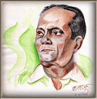

जैसाकिहम
जानतेहैं पंनरेन्द्रशर्माकालिखा,
सुधीरफड़के द्वारासंगीतबद्धऔरलताजी
कागायागीतहोतोवहएकदमलाजवाबहीहोताहै ( उदाहरणकेलिए "ऐसेहैंसुखसपनहमारे", "बाँधीप्रीतफूलडोर",
"मनसौंपदियाअन्जानेमें",
"लौलगाती-गीतगाती" आदि) इसीश्रेणीमें
यहएकबहुतहीमधुरसंगीतऔर
सुन्दरशब्दोंसे
रचागीतआपकेलिए!

इसेगायाहैलताजीने
फिल्मसजनी1956 केलिएफिल्मांकनहुआहैअनूपकुमारऔरसुलोचनापर।
आइयेगीतसुनतेहैंऔरसाथ-साथनीचेदिएशब्दोंकोपढ़करगुनगुनातेहैं।
External player or recording not archived. Original media link
जारेचंद्र,
जारेचंद्र, औरकहींजारे-२
गोकुलसे कृष्णचंद्रजायेंगेसकारे
जारेचंद्रजारे
बृन्दावनसुनाहैसुनामनमेरा
विघनाकुछऐसीकरकलनहोसवेरा
झरतेनयन,
भरते, नयन, डूबरहेतारे
गोकुल से कृष्णचंद्रजायेंगेसकारे ,
जारेचंद्रजारे
नयननीर,
मनमेंपीर, इतनीसीकहानी
हैयेप्रीत,
रीत सखी, पहलेक्यूँनजानी
कलकिसुनकलनापडेविकलमनपुकारे
गोकुलसेकृष्णचंद्रजायेंगेसकारे ,
जारेचंद्रजारे
मोहनमननामसखीमोहनवनमाली
कैसेरहेप्राणरहेजबनप्राणप्यारे
गोकुलसेकृष्णचंद्रजायेंगेसकारे ,
जारेचंद्रजारे
download link
Song Title: Ja Re Chandra Ja re
Film : Sajani 1956
Music: Sudhir Fadke
Lyric: Pt. Narendra Sharma
Singer : Lata mangeshkar
(गीत की Lyric में मदद करने के लिए लावण्या (दी) शाह का विशेष धन्यवाद)